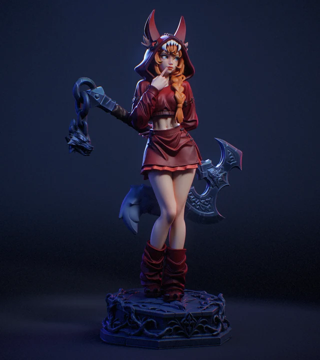
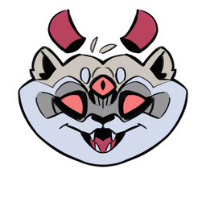
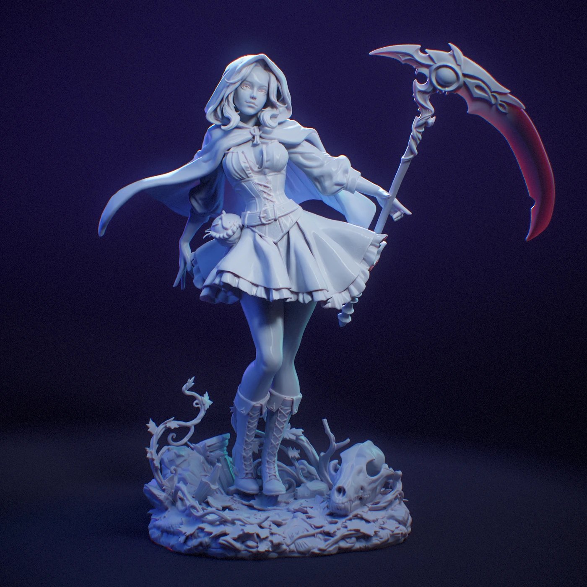
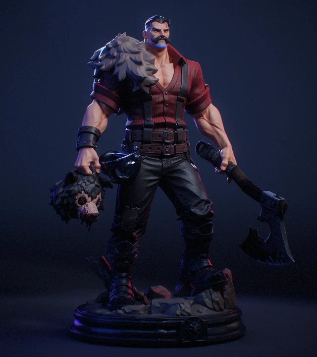
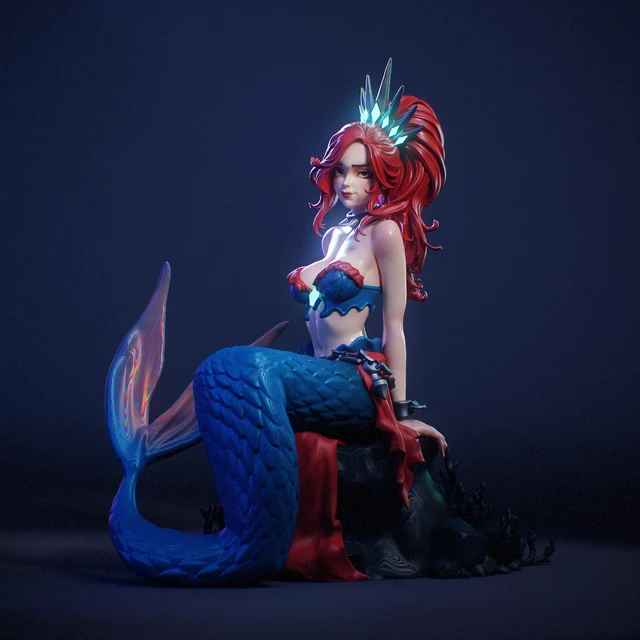
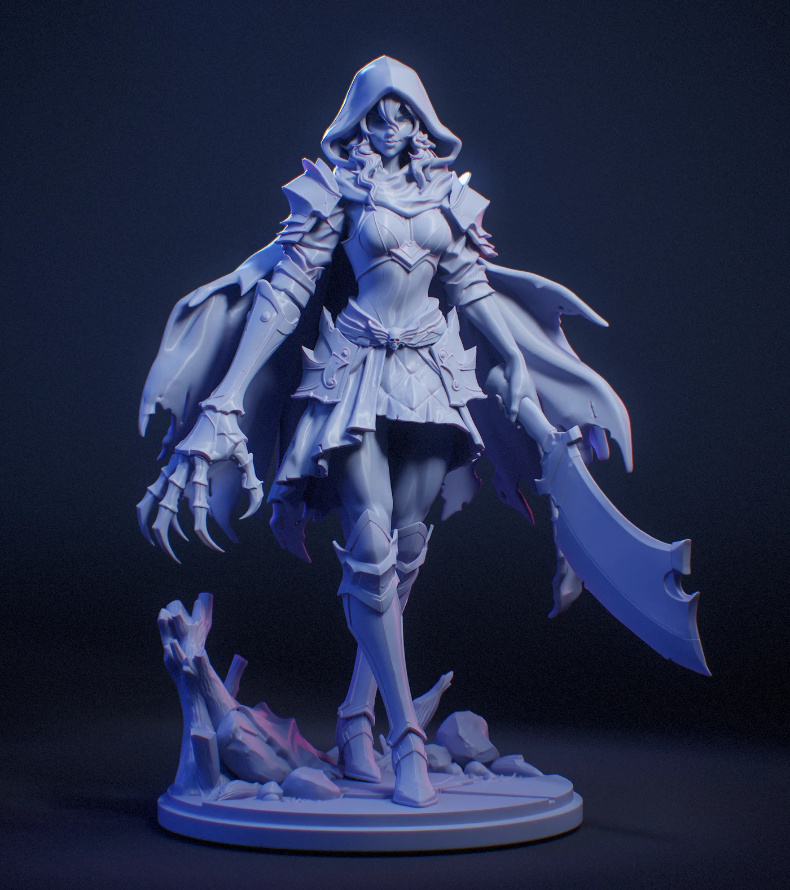
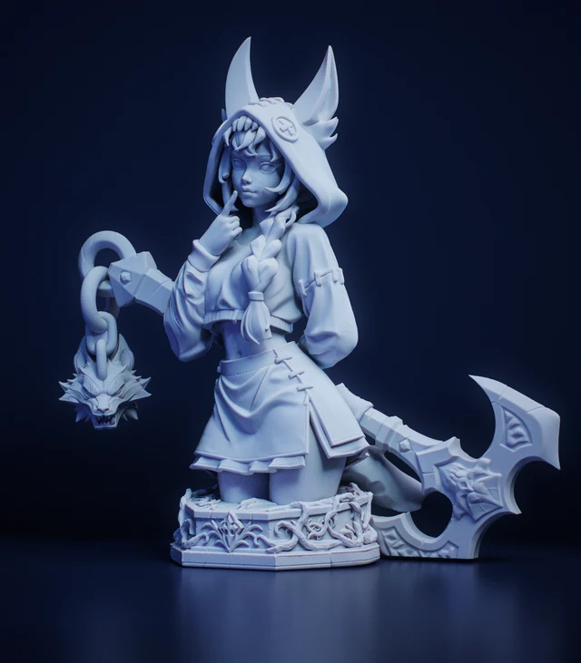

Closer lookBriar Vess
Cursed Tales II / Character

SHERCOONSCULPTURE STUDIO Open for commissionsIndependent sculpture studio
Character sculpting for miniatures
and collectible figures.
01 / The portfolio
Original sculpts.
A closer look at the details.

Closer lookCursed Tales II / Character

Closer lookCursed Tales / Character

Closer lookCursed Tales II / Character

Closer lookCursed Tales / Creature

View campaignCursed Tales II / Character
02 / Behind the characters
We’re a three-person core team creating miniatures and collectible figures, with specialist collaborators joining when a project needs them.
01 Character sculpting
02 Miniature collections
03 Parts & print supports
Creative direction by Sher.
Project conversations with Dmitry.

The studio archive / 23 characters
03 / Your next character
Tell us about your idea,
scale and target date.